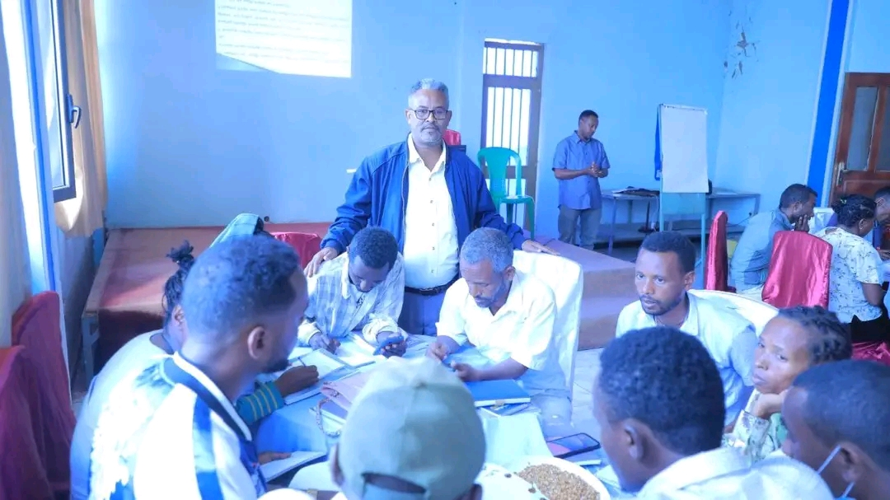

EventMar 20, 2026
Competent School Leadership for School Improvement
The Central Ethiopia Regional Education Bureau has launched the second round of on-the-job capacity-building training for over 330 school leaders and experts across three centers (Hossana, Worabe, and Bui). The initiative aims to transform school administrators into "change leaders" to directly improve educational quality and student outcomes across pre-primary, primary, and middle schools in the region